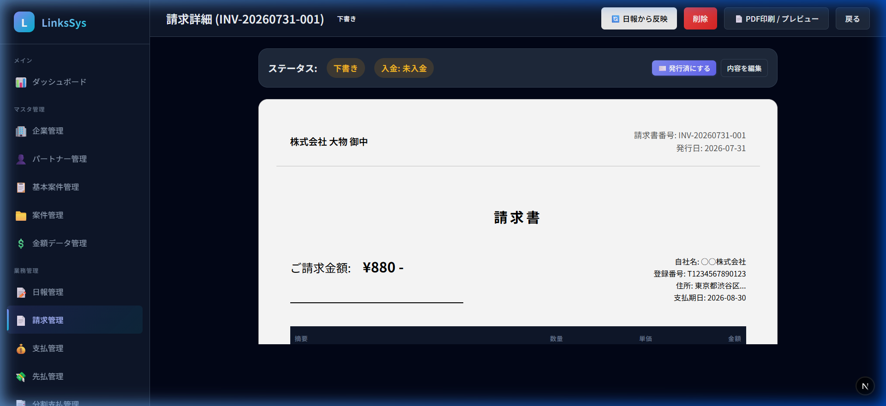

精算 → 請求 → 開く
請求書の詳細
開くとこう見えます
宛名、対象月、明細、税、PDFの場所です。下書きのあいだだけ、明細を直せます。

何をどこに入れるか
| ここ | 何をするか |
|---|---|
| 摘要・単価・個数・税区分 | 下書き中だけ。金額を変えるときは理由が必須 |
| 明細の追加 | 摘要と追加理由が必須 |
| 日報から再反映 | 承認済み日報との差分。手で直した行は選ばないと上書きされない |
| 見本PDF | 未発行のA4イメージ。確定そのものではない |
確認から確定
下書き → 営業確認 → 最終確定・PDF発行、の順です。確定時に入出金の予定が乗り、帳票番号が付きます。取消は理由必須。確定後の訂正は新番号です。古い番号は使いません。
気をつけること
発行済みPDFは、あとからマスタを変えても変わりません。取消済みは社内用の透かしが付きます。